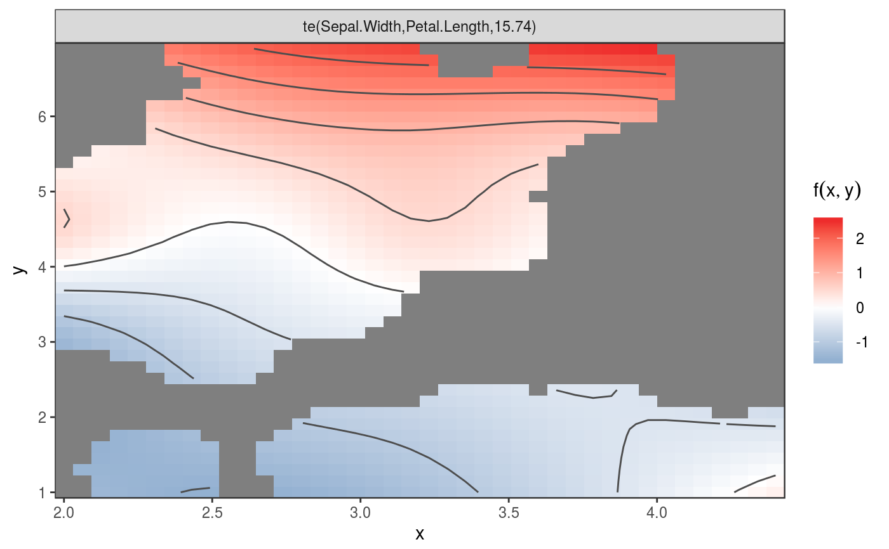
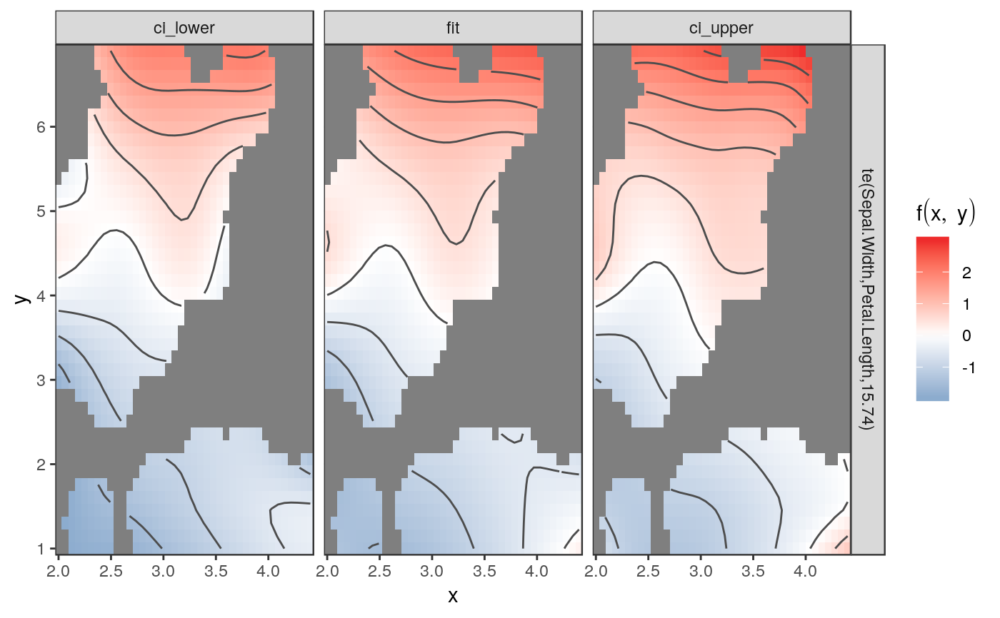
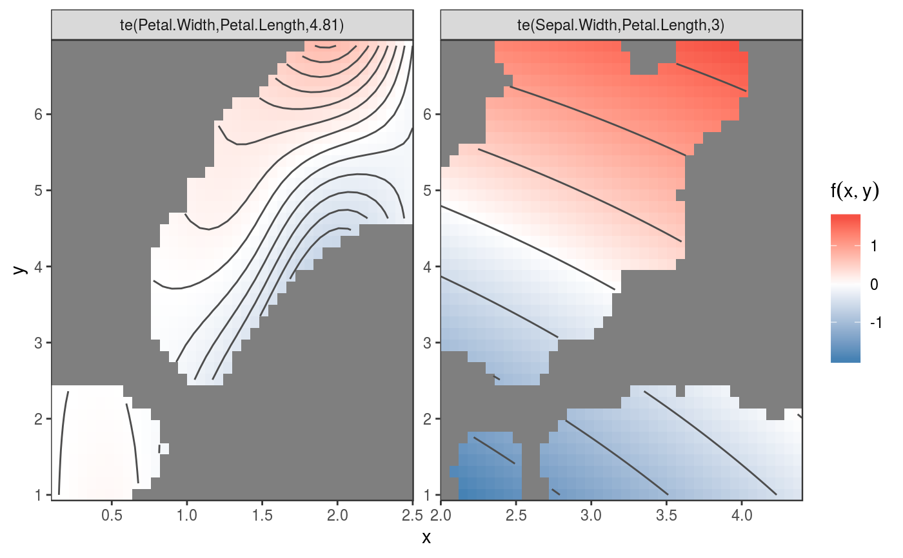

Given a gam model this convenience function returns a ggplot2 object
depicting 2d smooth terms specified in the model as heat/contour plots. If
more than one 2d smooth term is present individual terms are faceted.
gg_tensor(x, ci = FALSE, ...)
| x | a fitted |
|---|---|
| ci | A logical value indicating whether confidence intervals should be
calculated and returned. Defaults to |
| ... | Further arguments passed to |
#> Warning: Removed 647 rows containing non-finite values (stat_contour).gg_tensor(g, ci=TRUE)#> Warning: Removed 1941 rows containing non-finite values (stat_contour).gg_tensor(update(g, .~. + te(Petal.Width, Petal.Length)))#> Warning: Removed 1624 rows containing non-finite values (stat_contour).